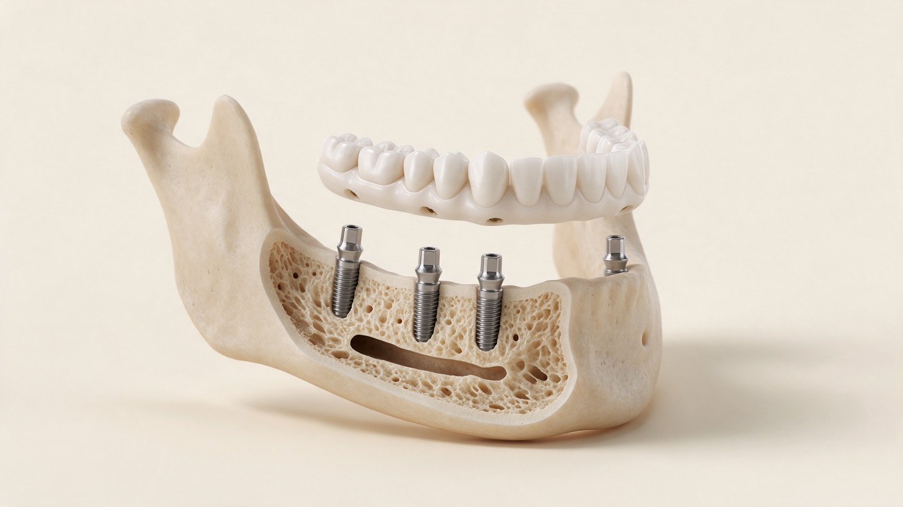
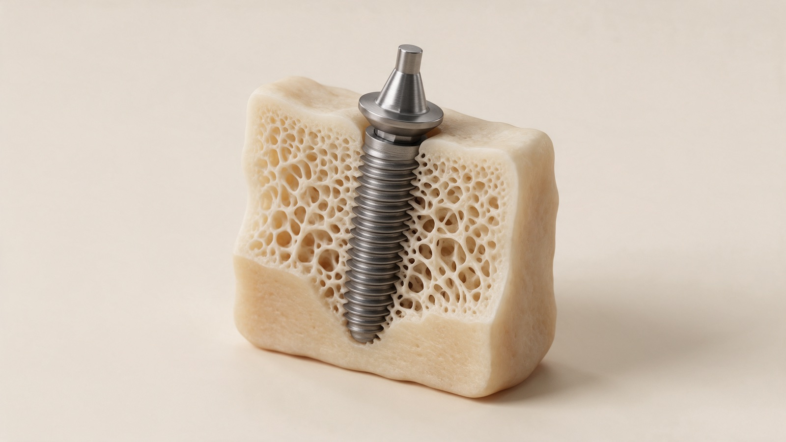
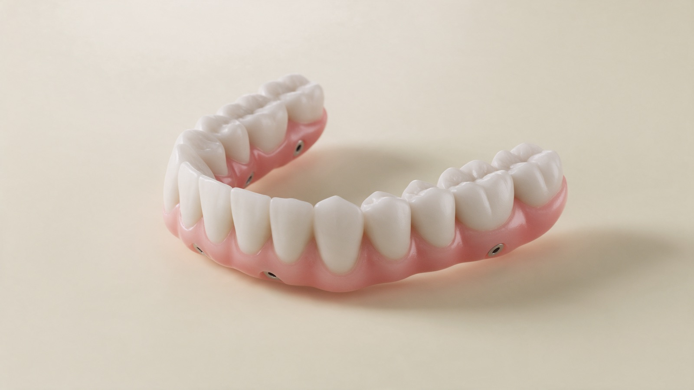
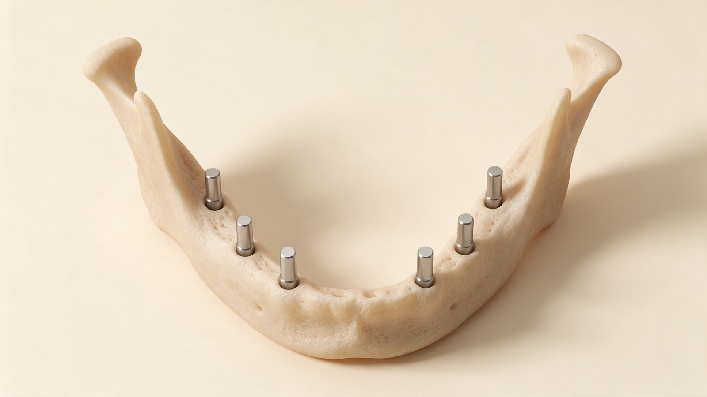

Many missing teeth
When most or all teeth in the upper or lower jaw are missing, All-on-X provides a fixed replacement for them.

If you or a family member has most teeth missing or failing, this page explains what All-on-X is, who it may suit, and what to ask before deciding.
A detailed assessment is what tells you whether All-on-X suits your needs, your health and what you want from treatment.
When most or all teeth in the upper or lower jaw are missing, All-on-X provides a fixed replacement for them.
When dentures move, rub or make eating and speaking uncomfortable, All-on-X offers a fixed option that stays in place.

When most teeth are badly damaged, loose or keep causing problems, it may be time to weigh up saving them against replacing them.

One connected row of teeth, carried by a few well-placed implants rather than one implant for every tooth.
All-on-X replaces all the teeth in the upper or lower jaw with a connected row of fixed replacement teeth, supported by several dental implants. Rather than using one implant for every missing tooth, the implants are carefully planned to carry the entire arch.
The parts of the treatment
Implants sit in the jawbone and carry a connected set of replacement teeth. The implants, your new teeth and your bite are planned together, not as separate parts.

Titanium implants are placed in the jawbone to carry the connected teeth. During healing the surrounding bone grows onto the implant, which is what gives it a stable foundation.

The replacement teeth are made as one connected full-arch restoration. High-strength zirconia is used for its strength, durability and natural appearance.

The “X” is the number of implants carrying the arch. Commonly four or six, depending on your bone, your bite and the plan made for you.
For suitable patients there are practical benefits. The result depends on your oral health, the design, healing and ongoing care.
A fixed restoration makes everyday chewing more comfortable than a loose denture does.
Carried by implants, the teeth stay in place. They are not taken out at night.
With less movement than a loose denture, fixed teeth make speaking and socialising easier to relax into.
The shape, arrangement and appearance of your teeth are planned around your own face, smile, speech and bite.
Treated at Esteem Dental Clinic and shared with consent. Outcomes vary from patient to patient.


All-on-X is more than a single procedure. It is a carefully planned journey from your first assessment and implant placement to healing and your final teeth.

A clinical examination, CBCT scan and digital scans give a detailed view of your teeth, gums, jawbone and bite. These records let the implant positions and the replacement teeth be planned together before surgery.

The implants are placed in one surgical appointment. A custom surgical guide or dynamic navigation helps the dentist place them to the digital plan with greater precision.

Where conditions allow, a fixed temporary set can be fitted on the day of surgery, so you leave with teeth while the implants heal.

Over the following months the implants integrate with the surrounding bone while the gum tissues heal and settle. This stage is mostly waiting, with reviews along the way.

Once healing and clinical checks say you are ready, the final full-arch restoration is fitted. Its design considers appearance, bite, function and cleaning access.
Take these to your dentist. A good answer to each one tells you a great deal about the plan being proposed.
Suitability depends on your remaining teeth, gum health, bone volume, bite and general health. A clinical examination and a CBCT scan are what let your dentist answer this properly.
Bone loss does not automatically rule out treatment. Depending on your anatomy, options may include bone grafting, alternative implant positions or a different treatment approach. A CBCT scan helps assess the available bone and determine which options may be suitable for your case.
Treatment usually takes place over several months. In suitable cases, a fixed temporary set of teeth may be fitted on the day of surgery, followed by the final restoration after the implants have healed and integrated with the bone, usually after around three months, depending on the individual case.
Surgery is usually done under local anaesthesia, so you should not feel pain during it, although you may feel pressure or movement.
Your new teeth can be designed around your face, smile, speech and bite. Your gums, lips and the amount of bone available can also affect the final result. Ask to see similar cases and discuss what may be achievable for you.
Daily cleaning around and beneath the bridge is essential. Your dentist may recommend a soft toothbrush, interdental brushes, super floss or a water flosser, together with regular professional reviews. The design should allow you to clean effectively at home.
Implants and the bridge are different components and may have different lifespans. With good hygiene and maintenance, implants can provide long-term support, but the bridge may need repair or replacement over time. Bite forces, smoking, health, materials and ongoing care all affect longevity.
Like any surgery, All-on-X has risks. These may include infection, bleeding, nerve or sinus problems, implant failure, changes to your bite or speech, and the need for future repairs. The risks are different for each person. Your dentist should explain which risks apply to you before you decide to proceed.